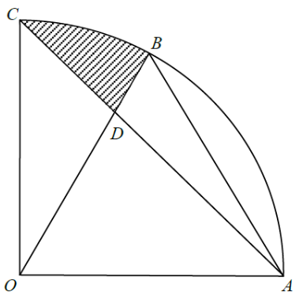

度量 · 扇形與三角形面積

$\triangle OAB$ 是等邊三角形，所以 $\angle AOB=60^{\circ}$。又 $OA$ 落在 $\angle COB$ 之內，故
$$\angle BOC=\angle AOC-\angle AOB=90^{\circ}-60^{\circ}=30^{\circ}$$
同一扇形內半徑相等，所以 $OC=OA=12\text{ cm}$。
$$[\triangle AOC]=\tfrac{1}{2}(12)(12)\sin 90^{\circ}=72\text{ cm}^{2}$$
$D$ 在 $OB$ 上，所以線段 $OD$ 把 $\triangle AOC$ 分成 $\triangle AOD$ 與 $\triangle COD$ 兩份。
$$\frac{[\triangle COD]}{[\triangle AOD]}=\frac{\tfrac{1}{2}\cdot OC\cdot OD\sin 30^{\circ}}{\tfrac{1}{2}\cdot OA\cdot OD\sin 60^{\circ}}=\frac{\sin 30^{\circ}}{\sin 60^{\circ}}=\frac{1}{\sqrt{3}}$$
即 $[\triangle AOD]=\sqrt{3}\,[\triangle COD]$，兩份合起來是 $72$：
$$[\triangle COD]=\frac{72}{1+\sqrt{3}}=36(\sqrt{3}-1)\approx 26.35\text{ cm}^{2}$$
$$[\text{扇形 }OBC]=\pi(12)^{2}\times\frac{30^{\circ}}{360^{\circ}}=12\pi\approx 37.70\text{ cm}^{2}$$
陰影 $BCD$ 就是扇形 $OBC$ 挖去 $\triangle COD$：
$$12\pi-\frac{72}{1+\sqrt{3}}\approx 37.6991-26.3538=11.3453\text{ cm}^{2}$$
準確至最接近的 $\text{cm}^{2}$，得 $11\text{ cm}^{2}$，即選項 A。
易錯：陰影不是「扇形 $OABC$ 減 $\triangle OAB$」，因為 $D$ 在 $OB$ 上，$BCD$ 的邊界是弧 $BC$、線段 $CD$ 與 $DB$；另外 $\dfrac{72}{1+\sqrt{3}}\approx 26.35$ 只是 $\triangle COD$ 的面積，剛好接近選項 C 的 $26$，不要誤答 C。